Um sinal, várias telas
Conectividade sem fio para visualização simultânea em diferentes dispositivos da equipe, incluindo macOS e iOS, conforme a configuração de rede e fonte de vídeo.
Captura, laudo, nuvem e conectividade médica em uma única estação de trabalho.
O Visus Medical Suite 17 organiza o exame completo: entrada do paciente, vídeo ao vivo, fotos, clipes, laudo estruturado, PDF, QR Code, histórico, I.A. assistiva e sincronização incremental.
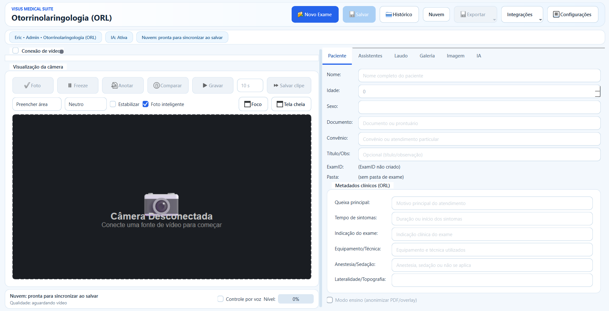
O Visus 17 centraliza paciente, especialidade, câmera, mídia clínica, campos dinâmicos, laudo, histórico, nuvem e integrações. O exame nasce no computador da clínica e pode ser enviado para a nuvem apenas quando a operação decidir.
A tela principal merece espaço: é onde o profissional trabalha com vídeo, paciente, metadados e abas do exame sem alternar entre sistemas.
A entrada mostra o controle de acesso e a escolha da área clínica antes do exame começar.
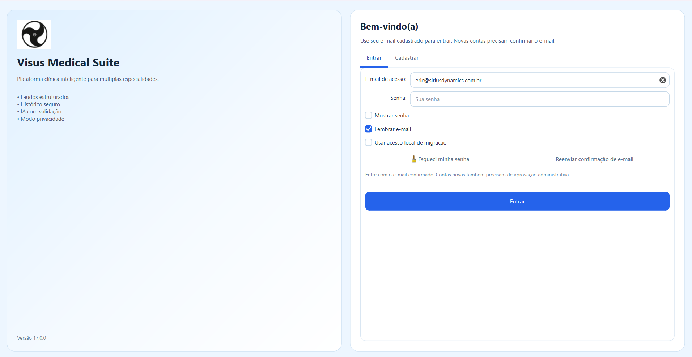
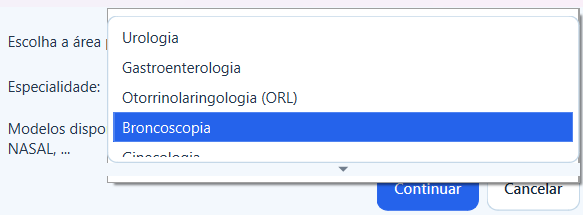
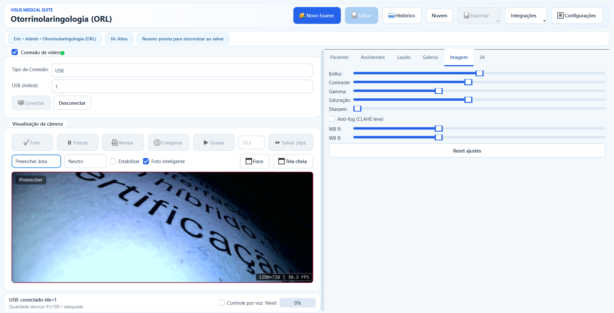
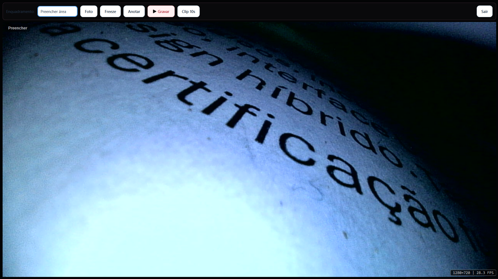
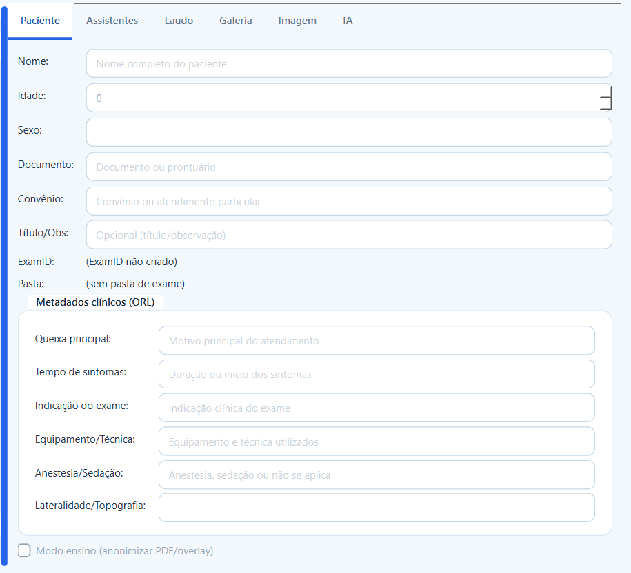
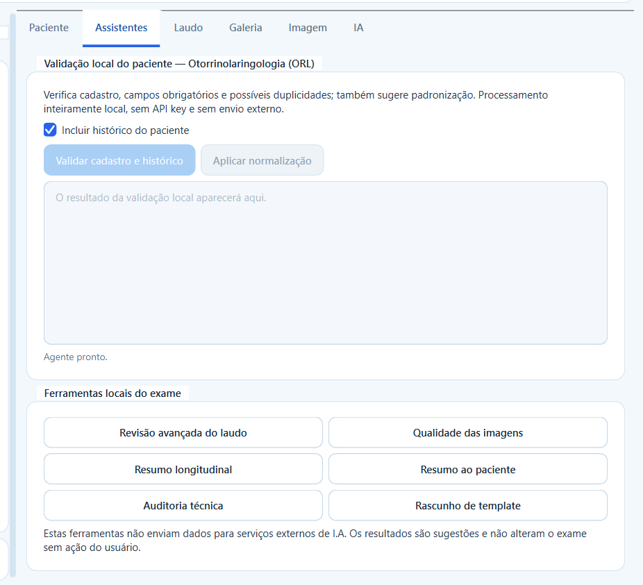
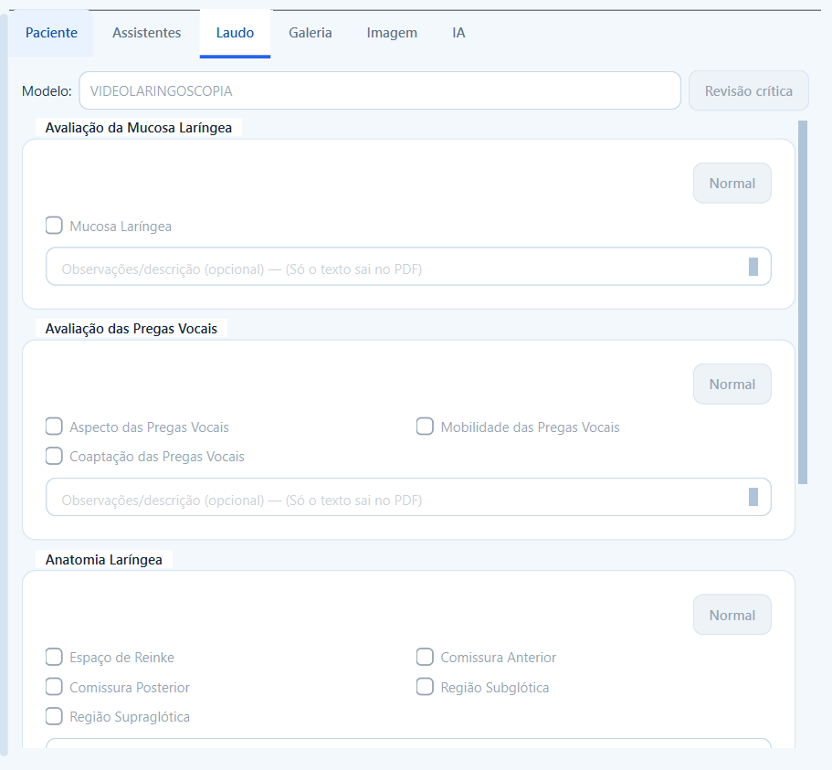
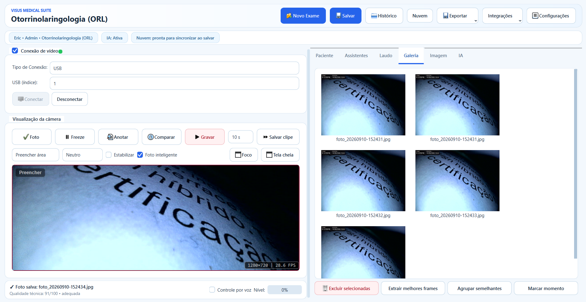
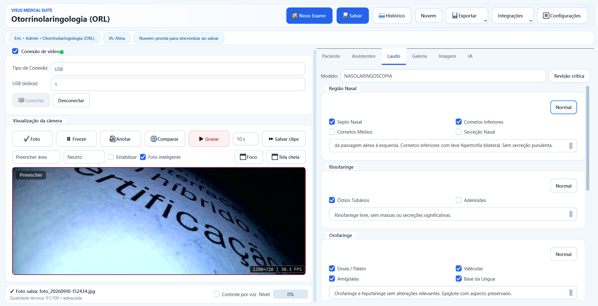
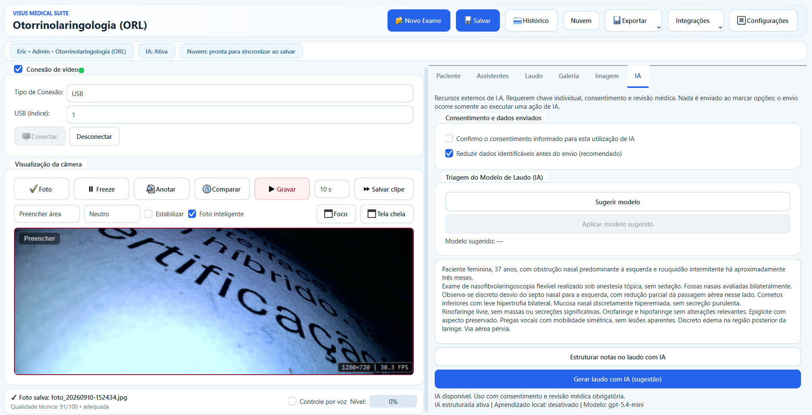
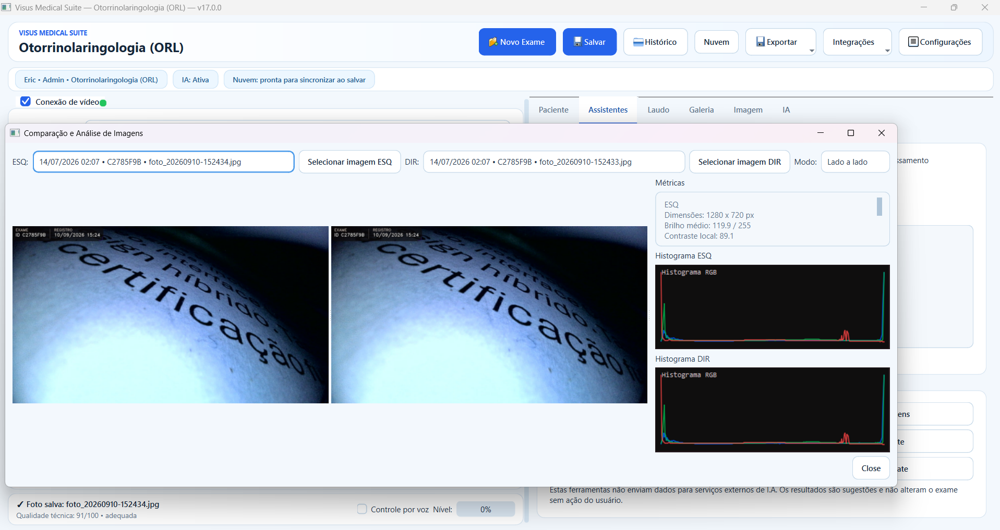
Além do software, o ecossistema Visus pode incluir hardware adaptador Wi-Fi para conectar a fonte de vídeo a vários dispositivos simultaneamente. A equipe pode acompanhar o sinal em computador, Mac, iPhone e outros dispositivos compatíveis.

Conectividade sem fio para visualização simultânea em diferentes dispositivos da equipe, incluindo macOS e iOS, conforme a configuração de rede e fonte de vídeo.
Suporte a hardware conversor CVBS para USB para trazer fontes analógicas de vídeo para o fluxo digital de captura, documentação e laudo.
O sistema trabalha com câmera USB, streams MJPEG, snapshots HTTP e ajustes locais de imagem, reduzindo dependência de soluções isoladas.
Login, cadastro autorizado, recuperação de senha, permissões, especialidades liberadas e separação de dados por conta.
Cadastro, busca, histórico, retornos, campos clínicos, metadados e organização local por paciente e exame.
Foto, freeze, gravação, clipe dos últimos segundos, áudio, anotações, galeria, comparação e qualidade técnica.
Modelos por especialidade, botão Normal, revisão crítica, PDF com imagens, assinatura visual e versão anonimizada para ensino.
Envio incremental, cache local, baixar ausentes, laudo digital por QR Code e gestão remota de laudos ou exames.
Camada técnica para PACS/DICOM, FHIR, HL7, portal de resultados, assinatura digital, filas e auditoria operacional.
Recursos do VISUS Medical Suite 17 organizados em uma leitura pública, objetiva e comercial.
Login, cadastro, verificação de e-mail, recuperação de senha, permissões, usuários locais, conta ativa ou pendente e especialidades liberadas.
Cadastro mestre, pesquisa, edição, arquivamento, restauração, mescla de duplicados, normalização de dados e vínculo seguro com exames.
Novo exame, edição, retorno, troca de modelo, metadados, auditoria, integridade, arquivos por categoria e salvamento local explícito.
Modelos dinâmicos, campos por especialidade, checkboxes, observações, botão Normal, revisão crítica, conclusão e dados profissionais.
PDF profissional com dados do paciente, exame, imagens, marca, assinatura visual, rodapé, versão anonimizada e link direto do laudo digital.
USB, HTTP snapshot, MJPEG, foto, freeze, vídeo, clipes, áudio, buffer recente, galeria, miniaturas, anotações e tela cheia.
Brilho, contraste, gamma, saturação, sharpen, anti-fog, balanço de branco, estabilização, foco, enquadramento e qualidade técnica.
Reconhecimento local em português, ditado para apoio ao laudo, gravação compartilhada e controle de início, parada e prontidão.
Revisão do laudo, qualidade de imagem, resumo longitudinal, resumo ao paciente, auditoria técnica, sugestão de modelo e estruturação de notas.
Busca por paciente, exame, especialidade e data, detalhes, retorno, pasta, PDF, central de dados e agrupamentos analíticos.
Cache local, atualização manual, envio de alterados, download de ausentes, manifesto, hash, laudo QR e exclusão remota controlada.
Filas auditáveis, endpoints, prévia de arquivos, PACS/DICOM, FHIR, HL7, portal de resultados, assinatura digital e importação EHR.
Médico, clínica, CRM, RQE, assinatura, marca, tema claro/escuro/automático, armazenamento, backup, LGPD, usuários e integrações.
Isolamento por UID, modo privacidade no overlay, nomes de pasta protegidos, modo ensino, aceite legal, auditoria e rastreabilidade.
Backup automático, pasta configurável, importação legada, reparo de índices e preservação da estrutura local do exame.
Campos, seções, frases normais, contexto da I.A. e modelos de laudo se ajustam conforme a especialidade selecionada.
O Visus pode apoiar revisão de cadastro, revisão avançada do laudo, qualidade de imagens, resumo longitudinal, resumo ao paciente, auditoria técnica, rascunho de template, sugestão de modelo e estruturação de notas.
Os recursos de I.A. são assistivos: não realizam diagnóstico, não assinam laudos e exigem consentimento, minimização de dados e revisão do profissional responsável.
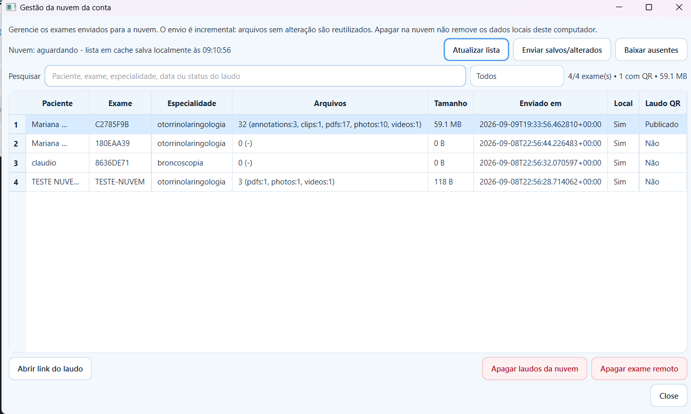
A gestão da nuvem usa cache local para abrir rápido, mostra exames, tamanho, status local e laudo QR, e permite envio incremental de arquivos novos ou alterados. Apagar na nuvem não remove os dados locais do computador.
A Sirius Dynamics Technology integra, na modalidade não residente, o programa da Incubadora Tecnológica do Instituto de Tecnologia do Paraná — Intec/Tecpar. A proposta do Nexus V foi selecionada por seu caráter inovador e potencial de impacto social.
O ambiente de incubação conecta o desenvolvimento a orientação técnica, infraestrutura e serviços especializados que apoiam prototipagem, ensaios, planejamento tecnológico e evolução do produto.
Incubação é um programa de apoio ao desenvolvimento tecnológico; não representa certificação ou aprovação regulatória do produto.O sistema contempla segurança de acesso, isolamento por usuário, armazenamento local, sincronização, PDF, QR Code, vídeo, áudio, I.A., histórico, analytics, backup, importação legada e integrações clínicas avançadas.
Baixar documento completo VISUS 17 ↓ A conformidade institucional depende de políticas, bases legais, consentimento, retenção, controle de acesso, treinamento operacional, equipamentos compatíveis e validação no ambiente real do cliente.